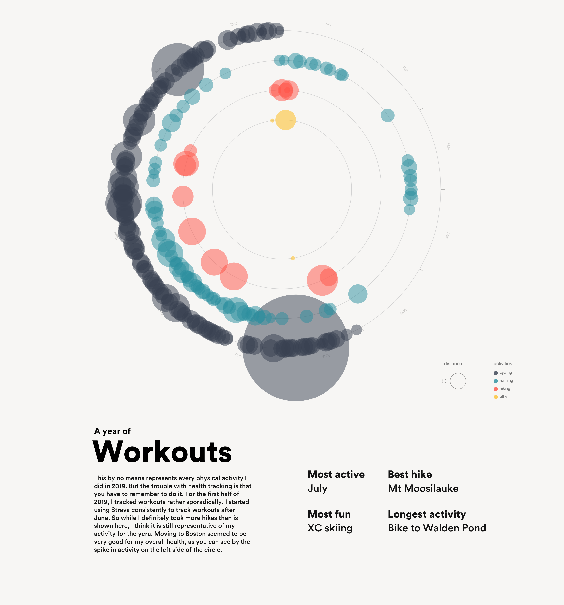
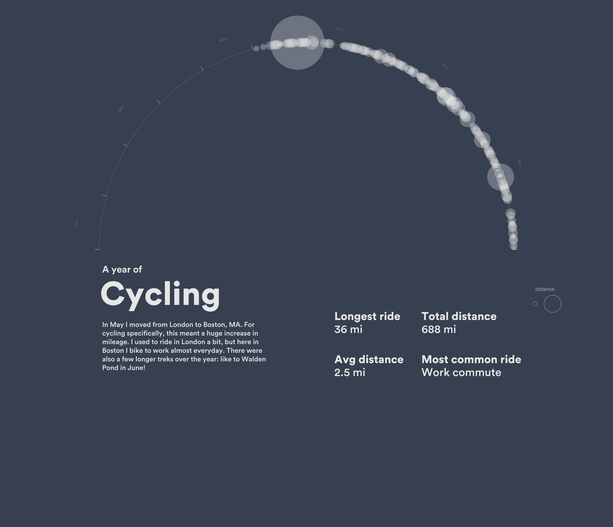
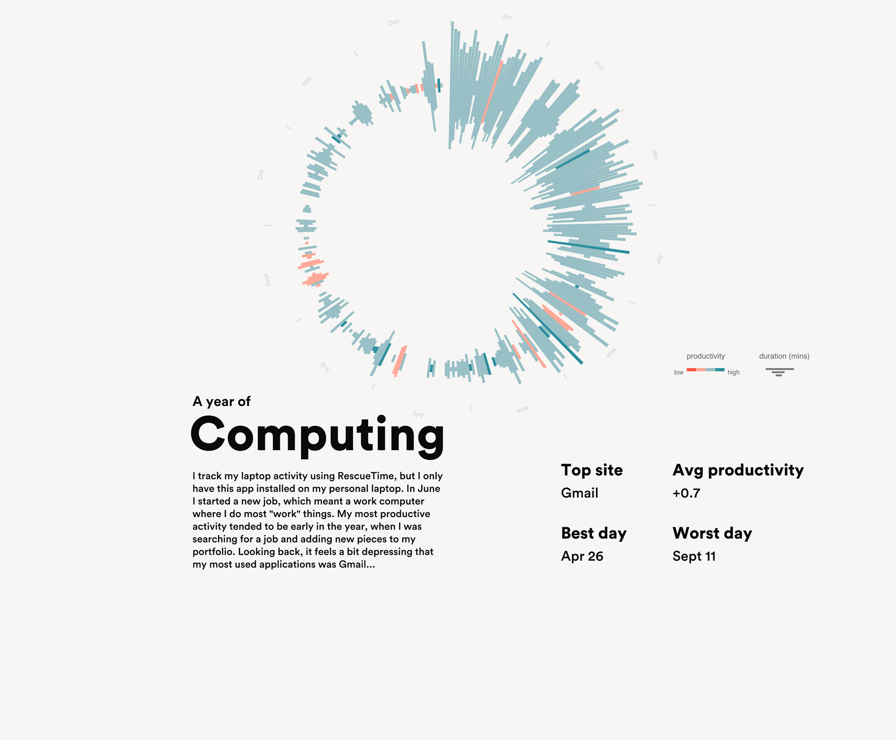

RESPONSIBILITIES
Everything (design + dev)
ABOUT
In 2019, I decided to intentionally track activities like working out, computer productivity, and listening to music. I relied on apps to track my steps, workouts, and app usage, and then analyzed the data at the end of the year.
The result of this analysis was a series of posters visualizing a few key areas of my life. Most notably, this excercise in reflection through information design was inspired by the Feltron reports. I also wrote a blog post to summarize how and why I made the site.
Go to site